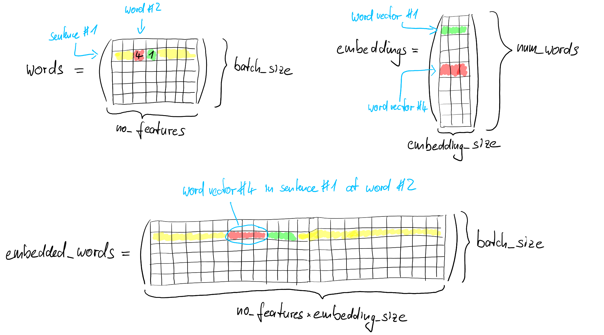

torch.index_select() for word embeddingsDoing assignment 3 of Stanford's CS224n (spring 2020) includes embedding a list of words, where each entry is an index leading to a single, specific word, with the corresponding word vectors as in the figure below. A possible solution is using PyTorch's index_select-function, together with PyTorch's reshaping function view. How these work and can be used to embed words with word vectors in a vectorised way will be shown in the following.

We have two matrices: First, words, which containes a list of lists of words, where each entry is an integer corresponding to a certain word; second, embeddings, whose rows are word vectors corresponding to each of the words of a vocabulary. The shapes of the matrices are words.shape = (batch_size, no_features), and embeddings.shape = (num_words, embedding_size).
To use the code below (or the script in the repo), torch needs to be imported. For better comparison, the random number generator will be seeded.
import torch
torch.manual_seed(0)Let's first set the dimensions of the matrices (see figure above).
batch_size = 2
no_features = 3
embedding_size = 5
num_words = 100
Next, initialise the matrices with random entries. Then, use recognisable entries for the first entry of each of the rows (i.e. the first column), so that we can later see more easily how the matrices get transformed.
words = torch.randint(100, (batch_size, no_features)) # Initialise words with random integers
words[:, 0] = torch.arange(batch_size) # This is to mark/recognise the head of each row of words
embeddings = torch.rand(num_words, embedding_size) # Initialise embeddings with random word vectors
embeddings[:, 0] = torch.arange(num_words) # This is to mark/recognise the head of each row of embeddings
This leads to the following outputs for the matrices:
>>> words
tensor([[ 0, 39, 33],
[ 1, 63, 79]])
>>> embeddings
tensor([[0.0000e+00, 1.6886e-01, 2.9389e-01, 5.1852e-01, 6.9767e-01],
[1.0000e+00, 1.6103e-01, 2.8227e-01, 6.8161e-01, 9.1519e-01],
[2.0000e+00, 8.7416e-01, 4.1941e-01, 5.5291e-01, 9.5274e-01],
[3.0000e+00, 1.8523e-01, 3.7342e-01, 3.0510e-01, 9.3200e-01],
...
torch.index_select() does not accept a tensor with dimension 2 or higher for determining the indices to select, so we first flatten the matrix words, containing all the words we want to embed:
words_reshaped = words.view(batch_size*no_features)
Now, the matrix like that:
>>> words_reshaped
tensor([ 0, 39, 33, 1, 63, 79])
Note how all the rows just have been concatenated.
The next step is to select for each of the indices in words the corresponding word vector from embeddings:
selected_embeddings = torch.index_select(embeddings, 0, words_reshaped)
The first argument of torch.index_select() is the matrix (tensor) to choose the entries from. The second argument specifies the dimension, along which the entry is to be chosen. The third argument gives indices, for which the entry is to be chosen. This means, for all indices i in the third argument, take entry #i of the first argument, along the dimension given in the second argument (see figure above for visualisation).
The new matrix selected_embeddings now looks like that:
>>> selected_embeddings
tensor([[0.0000e+00, 8.9644e-01, 4.5563e-01, 6.3231e-01, 3.4889e-01],
[3.9000e+01, 1.2204e-01, 1.5674e-01, 2.0967e-01, 8.4997e-01],
[3.3000e+01, 9.5150e-01, 6.8108e-01, 4.8770e-02, 8.1635e-01],
[1.0000e+00, 2.2326e-02, 1.6886e-01, 2.9389e-01, 5.1852e-01],
[6.3000e+01, 1.0693e-01, 5.3929e-01, 8.4623e-01, 9.5056e-01],
[7.9000e+01, 2.6393e-01, 9.5952e-01, 7.0447e-01, 1.2043e-01]])
Row i is the word vector from embeddings, chosen by the index i of words_reshaped. Note how the first row is the same as the first row in embeddings and the fourth row is the same as the second row in embeddings due to the first and fourth index of words_reshaped being 0 and 1, respectively.
The last step is to transform the result into a matrix where each row corresponds to one row of the input matrix words and has all the word vectors belonging to that row concatenated:
embedded_words = selected_embeddings.view(batch_size, no_features*embedding_size)
embedded_words now is
>>> embedded_words
tensor([[0.0000e+00, 8.9644e-01, 4.5563e-01, 6.3231e-01, 3.4889e-01, 3.9000e+01,
1.2204e-01, 1.5674e-01, 2.0967e-01, 8.4997e-01, 3.3000e+01, 9.5150e-01,
6.8108e-01, 4.8770e-02, 8.1635e-01],
[1.0000e+00, 2.2326e-02, 1.6886e-01, 2.9389e-01, 5.1852e-01, 6.3000e+01,
1.0693e-01, 5.3929e-01, 8.4623e-01, 9.5056e-01, 7.9000e+01, 2.6393e-01,
9.5952e-01, 7.0447e-01, 1.2043e-01]])
This can all be done in one line. Here, an additional feature of torch.view() is used: With -1 as argument, it infers the resulting dimension from the other given dimension(s). If no other dimension is given, it flattens the tensor to a one-dimensional vector.
embedded_words = torch.index_select(embeddings, 0, words.view(-1)).view(-1, no_features*embedding_size) #fully vectorised, i.e. fast to compute
In case of any comments or suggestions, please let me know!